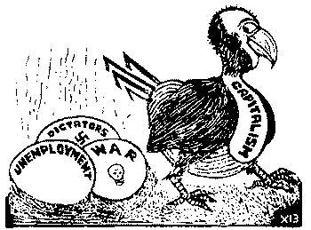

Фашизм как политика, как особая форма классового господства буржуазии есть открытая террористическая диктатура наиболее реакционных, наиболее шовинистических кругов финансового капитала.
В отличие от диктатуры буржуазии в форме либеральной демократии, фашисты устанавливают открытую террористическую диктатуру буржуазии, важнейшие черты которой — отбрасывание демократических форм, попрание демократически выработанных юридических норм, никакими демократическими процедурами не опосредствованное насилие.
Такого рода политику нынешние империалистические государства после разгрома фашизма во второй мировой войне не рискуют проводить внутри страны, зато во внешней политике пытаются осуществлять прямую, опирающуюся не на нормы международного права, а на террор, диктатуру наиболее реакционных кругов финансового капитала.
В отношении сионистского Израиля имела место даже специальная резолюция Генеральной ассамблеи ООН, заклеймившая сионизм как форму фашизма. После разрушения СССР под нажимом США эта резолюция была отменена, но без какой-либо записи о том, что до этого момента она была ошибочной.
Во внутренней политике США сохраняется традиционное либерально-демократическое прикрытие. Но во внешней политике проявляются черты, характерные для фашистского господства. Можно без преувеличения сказать, что по некоторым статьям США превзошли фашистский террор Гитлера.
Трагическая судьба Югославии, Ирака, Ливии и фашистская угроза, нависшая над Сирией, только укрепили решимость народов этих стран отстаивать свою свободу. Даже многие капиталистические государства не желают иметь отношения с фашиствующим на международной арене американским империализмом. Человечество освободилось от итальянского фашизма, от германского фашизма (нацизма), от испанского, португальского, чилийского и греческого фашизма, от кратковременного стрелявшего по собственному буржуазному парламенту ельцинского фашизма, и есть предпосылки того, что человечество освободится и от американского фашизма на экспорт. Но для этого нужны усилия народов многих стран мира.